The City Line Chruch Food Pantry serves senior citizens and families with small children in need. They need volunteers every second and fourth saturday of every month, from 9 AM to 2 PM. You can contact them at (201) 332-0970.
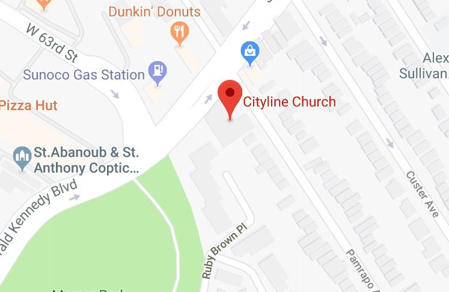Volunteer as a gardner in Clifton; your job will be to maintian the garden, prune the trees, and raking the soil. Sign up for any week day from 9:30 AM - 12 PM, or from 12 PM - 7 PM on https://www.jerseycares.org/opportunity/a0C1N00000GExZIUA1#.
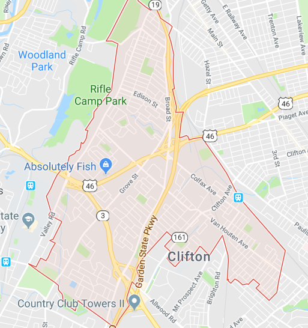Volunteer Drivers are needed for 1.5 hours every month to transport food from Westwood to a surrounding location. Call Meals on Wheels NJ at 201.358.0050 for more information.
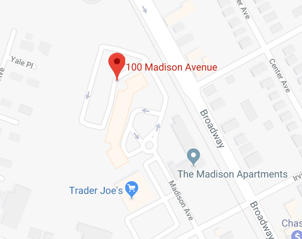Volunteers are needed to assist in 6 annual fundraisers for the Diabetes Foundation, duties would include planning, staffing, and obtaining items for events. Call 1-201-444-0337 for more information. C
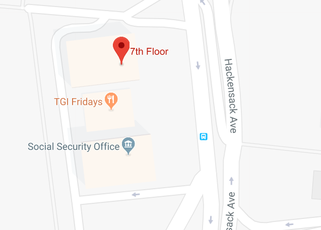Help improve the lives of little furry friends with the Second Chance for Animals by volunteering at their shelter. Get more info by contacting them at 732 873-2500.
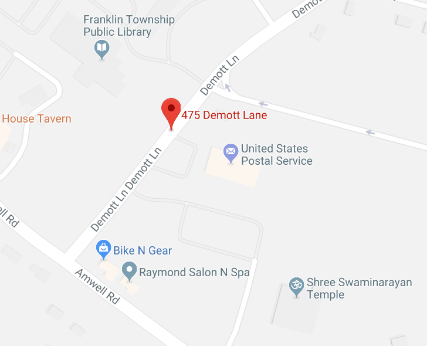Volunteer with Arm In Arm by helping out in the food pantry, garden, or even by organizing a drive. Sign up at http://arminarm.org/volunteer-opportunities/.
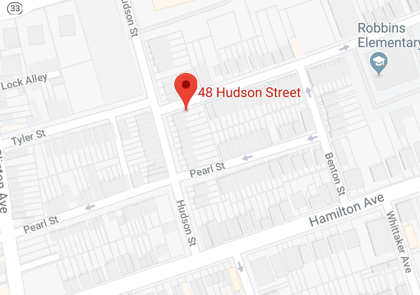Volunteer every third Wednesday from 7:30 AM to 11:30 AM to distribute food for families in need of fresh food. Contact marissa.cantu@centerffs.org to sign up.
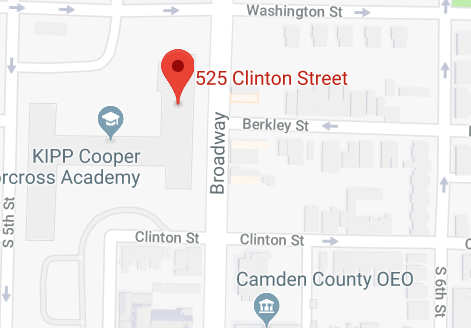Volunteer daily from 3:30 - 5:30 at the Cathederal Kitchen by plating, serving food and cleaning up. You can also volunteer with your car to pick up food from surrounding area. More information can be obtained by contacting (856) 663-9356
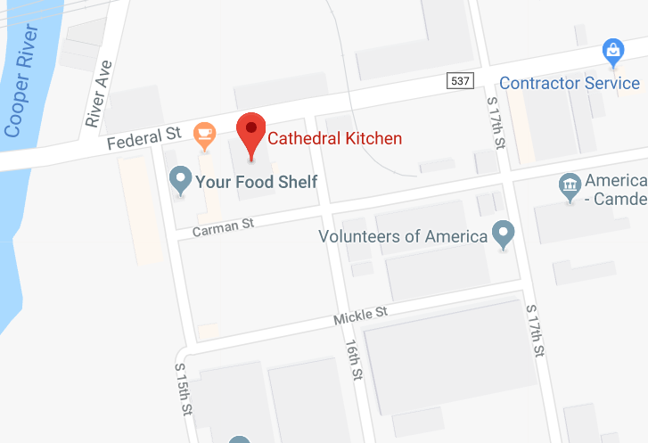The Cabrini Immigrant Service hosts a food pantry every Monday and Tuesday from 9:30AM - 12:30PM. They are looking for volunteers to set up, run and clean up. If interested, contact Frannie Skardon at 212-791-4590.
139 Henry Street, N.Y.C., NY 10002

Volunteer with the Henry Street Settlement and tend to the gardens. They need volunteers to water, clean, and weed the gardens. Sign up by contacting John Toribio-Perez at 212-766-9200
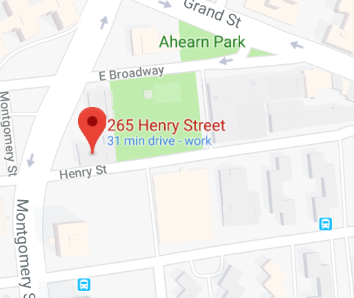
Grab a few friends and family and go volunteer at the Food Bank, you will be packing and sorting food for the needy. Sign up for a shift at https://foodbankofhudsonvalley.org/volunteer/. For more information, contact Alex Scott at ascott@foodbankofhudsonvalley.org, or at 845-534-5344
195 Hudson St, Cornwall-On-Hudson, NY 12520

Make a difference by helping out cancer patients. Volunteers are need to drive patients to and from treatments, etc. Call 1-800-ACS-2345 for more information.
121 Executive Drive, New Windsor, NY 12553

The Food Pantry runs Monday - Friday and is run soley by volunteers. If interested, you can sign up by calling 585 325-4950, or by emailing calvarystandrews@gmail.com
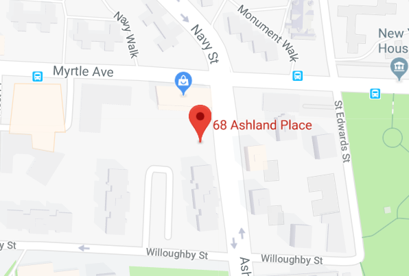Volunteer at Lollypop Farm to help amazing pets find homes. You can be a foster carer for a short period of time, or help out around the shelter. Contact the Volunteer Manager at (585) 223-1330.
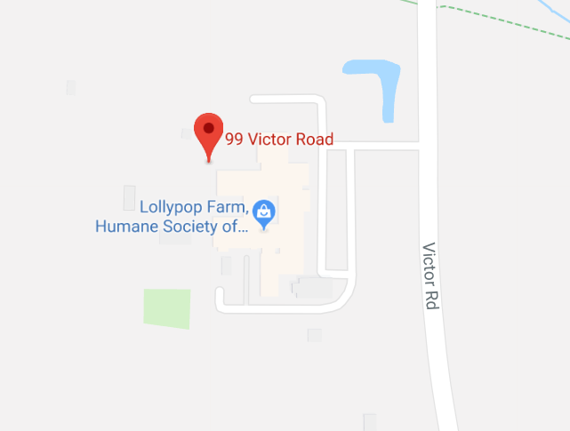Sign up to volunteer at the Hartford Marathon and improve the lives of local children. Your jobs will include handing out water and shirts to the runners, and cheering them on. Contact Phil Blonski for more information at pblonski@unitedwayinc.org or 860-493-1132
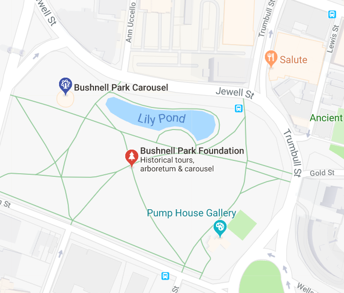Jewish Family Services is looking for friendly visitors to simply hangout with the senior citizens and give them a friendly face to look forward to. If interested, please contact JFS: 1-860-236-1927.
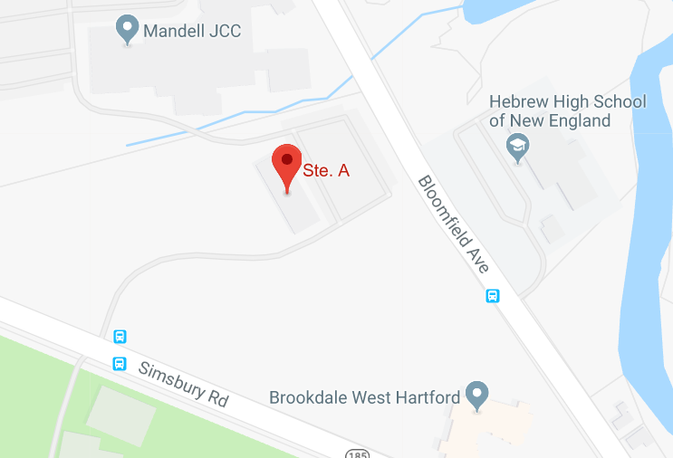